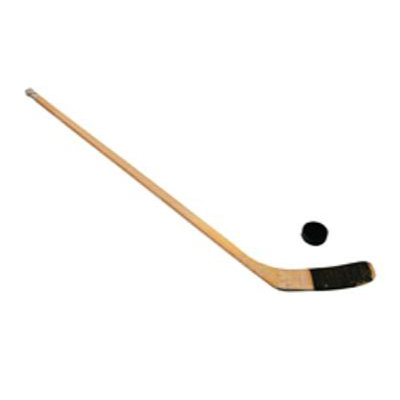

<!DOCTYPE html>
<html>
 <!--
  Task: Perceptual-baseline control task in cMST
  Author: Craig Stark
  Forked from cont_omst.html and pcon_gs_v2.html and pcon_instr_gs.html on 6/22/23
  
  8/16/23 (CELS): Fixed for versions without setup.html to progress to next phase
  8/30/23 (CELS): Added getID() to come up with a good sid

  Optional parameters:
  In the JATOS versions, these come in via jatos.studySessionData but we also can pass
  them in as URL parameters.  Check the code as the actual variable names differ a touch b/n versions. 
  (these are the JATOS ones)

  Optional parameters:
  [sid=##]: Subject ID -- used for data file name (default=1234)
  [resp_mode=X]: Response mode -- set to 'keyboard' to use keyboard, anything else to use buttons (default=buttons)
  [pcrand=#]: Should the trial order be randomized? (default=0, fixed)

  Note, if you use the "baseurl" bit to specify a webserver with the images, you'll need to update the Content-Security-Policy below
  For example, I use:   img-src 'self' https://starklab.bio.uci.edu data: content:;
-->

<head>
  <script>
    console.log('Script running');
    const value = localStorage.getItem('classicGraphics');
    console.log('classicGraphics value:', value);
    console.log('Type:', typeof value);
    // This runs IMMEDIATELY when parsed, before body exists
    const classicGraphics = localStorage.getItem('classicGraphics') === '1';
    
    // Set background on HTML element (which already exists)
    if (classicGraphics) {
      document.documentElement.style.backgroundColor = '#ffffff'; // white
    } else {
      document.documentElement.style.backgroundColor = '#f5f5dc'; // cream
    }
  </script>
 <meta http-equiv="Content-Security-Policy" content="default-src 'self' data: gap:  'unsafe-inline' 'unsafe-eval' 
        https://fonts.gstatic.com ; 
      style-src 'self' 'unsafe-inline' https://fonts.googleapis.com/css; media-src *; 
      img-src 'self' data: content:;">
      
  <script type="text/javascript" src="jatos.js"></script>
  <script type="text/javascript" src="js/index.js"></script>
  <script src="js/jquery-3.1.1.min.js"></script>
  <script src="js/jspsych_731/dist/jspsych.js"></script>
  <script src="js/jspsych_731/dist/plugin-html-keyboard-response.js"></script>
  <script src="js/jspsych_731/dist/plugin-image-keyboard-response.js"></script>
  <script src="js/jspsych_731/dist/plugin-html-button-response.js"></script>
  <script src="js/jspsych_731/dist/plugin-image-button-response.js"></script>
  <script src="js/jspsych_731/dist/plugin-canvas-keyboard-response.js"></script>
  <script src="js/jspsych_731/dist/plugin-canvas-button-response.js"></script>
  <script src="js/jspsych_731/dist/plugin-animation.js"></script>
  <script src="js/jspsych_731/dist/plugin-preload.js"></script>
  <script src="helpers.js"></script>
  <link rel="stylesheet" href="css/jspsych.css"></link>
  <link
    rel="preload"
    href="css/fonts/ComicRelief-Regular.woff2"
    as="font"
    type="font/woff2"
    crossorigin
  />
  <link
    rel="preload"
    href="css/fonts/ComicRelief-Bold.woff2"
    as="font"
    type="font/woff2"
    crossorigin
  />
  <style>
    .image-btn-text text {
      font-size: 1.2em;
    }
    
    .image-btn-wrapper.pressed .image-btn-text{
      transform: translate(-50%, -40%) !important;
    }

    .mobile .image-btn-text text{
      font-size: 1.5em;
    }

    .mobile .image-btn-text .text-stroke {
      stroke-width: 12;
    }

    .image-btn-text.kr text {
      font-size: 1.2em;
    }

    .image-btn-text.ru text{
      font-size: 0.9em;
    }
    .image-btn-text.ru .text-stroke {
      stroke-width: 8;
    }

    .image-btn-text.nl  text{
      font-size: 0.8em;
    }
    .image-btn-text.nl .text-stroke {
      stroke-width: 8;
    }

    .mobile .image-btn-text.es text {
      font-size: 1.4em;
    }
    
    .mobile .image-btn-text.kr text {
      font-size: 1.2em;
    }
    .mobile .image-btn-text.kr .text-stroke {
      stroke-width: 12;
    }


    .mobile .image-btn-text.nl text {
      font-size: 0.8em;
    }
    .mobile .image-btn-text.nl .text-stroke {
      stroke-width: 8;
    }

    .mobile .image-btn-text.ru text {
      font-size: .8em;
    }
    .mobile .image-btn-text.ru .text-stroke {
      stroke-width: 8;
    }
    
    .tablet .image-btn-text.kr text {
      font-size: 1.2em;
    }

    .tablet .image-btn-text.ru text {
      font-size: 0.8em;
    }
    .tablet .image-btn-text.ru .text-stroke {
      stroke-width: 8;
    }

    .mobile .prompt_text {
      font-size: 1.2em;
    }

    .smallScreen .prompt_text {
      font-size: 0.8em;
    }

    .smallScreen .jspsych-categorize-image-buttons-stimulus{
      width: 30vw;
    }

    #jspsych-animation-image {
      width: 25vw;
      height: auto;
    }

    .tablet #jspsych-animation-image {
      width: 50vw;
    }

    .mobile #jspsych-animation-image {
      width: 75vw;
    }

    .smallScreen #jspsych-animation-image {
      width: 30vw;
    }

    .jspsych-content {
      height: 100svh;
      width: 100svw;
      justify-content: space-around;
    }

    .dimtext {
        color: #F0f0F0;
        border-color: #F0f0F0;
    }
    .redtext {
      color: red;
    }

    .jspsych-content {
      visibility: hidden !important;
    }

    .jspsych-content.ready {
      visibility: visible !important;
    }
  </style>
</head>
<body></body>

<script>
function waitFor(conditionFunction) {
  const poll = resolve => {
  if(conditionFunction()) resolve();
    else setTimeout(_ => poll(resolve), 400);
  }
  return new Promise(poll)
}

function invNormcdf(p) { // https://stackoverflow.com/questions/8816729/javascript-equivalent-for-inverse-normal-function-eg-excels-normsinv-or-nor
  var a1 = -39.6968302866538, a2 = 220.946098424521, a3 = -275.928510446969;
  var a4 = 138.357751867269, a5 = -30.6647980661472, a6 = 2.50662827745924;
  var b1 = -54.4760987982241, b2 = 161.585836858041, b3 = -155.698979859887;
  var b4 = 66.8013118877197, b5 = -13.2806815528857, c1 = -7.78489400243029E-03;
  var c2 = -0.322396458041136, c3 = -2.40075827716184, c4 = -2.54973253934373;
  var c5 = 4.37466414146497, c6 = 2.93816398269878, d1 = 7.78469570904146E-03;
  var d2 = 0.32246712907004, d3 = 2.445134137143, d4 = 3.75440866190742;
  var p_low = 0.02425, p_high = 1 - p_low;
  var q, r;
  var retVal;

  if ((p < 0) || (p > 1))
  {
    alert("NormSInv: Argument out of range.");
    retVal = 0;
  }
  else if (p < p_low)
  {
    q = Math.sqrt(-2 * Math.log(p));
    retVal = (((((c1 * q + c2) * q + c3) * q + c4) * q + c5) * q + c6) / ((((d1 * q + d2) * q + d3) * q + d4) * q + 1);
  }
  else if (p <= p_high)
  {
    q = p - 0.5;
    r = q * q;
    retVal = (((((a1 * r + a2) * r + a3) * r + a4) * r + a5) * r + a6) * q / (((((b1 * r + b2) * r + b3) * r + b4) * r + b5) * r + 1);
  }
  else
  {
    q = Math.sqrt(-2 * Math.log(1 - p));
    retVal = -(((((c1 * q + c2) * q + c3) * q + c4) * q + c5) * q + c6) / ((((d1 * q + d2) * q + d3) * q + d4) * q + 1);
  }

  return retVal;
}

function getID() {
  // Try to get a reasonable ID code for this person.  You can use the URL with a "sid" parameter or
  // specify one in the jatos studySessionData. If not, it'll use the JATOS workerId.
  // URL > studySession > workerID
  var sid=jatos.urlQueryParameters.sid;
  if (sid == undefined) {
    sid=jatos.studySessionData['sid'];
  }
  if (typeof sid == 'undefined') {
    if (typeof jatos.workerId !== 'undefined') { // At least try the workerID
      sid = jatos.workerId;
    }
    else { sid=1234; }
  }
  return sid
}

jatos.onLoad(async function() {
  //baseurl='https://starklab.bio.uci.edu/mst/'; // How we'll get images, videos, etc.  Set to empty string to use local folders
  baseurl=''; // How we'll get images, videos, etc.  Set to empty string to use local folders
  var sid=getID();

  var resp_mode='button';
  if (jatos.studySessionData['resp_mode'] == 'keyboard') {
    resp_mode='keyboard';
  }
  var randomize=false;
  if (jatos.studySessionData['pcrand'] == 1) {
    randomize = true;
  }
  
    var lang='en';
  
  if (typeof jatos.studySessionData['lang'] !== 'undefined') {
    lang=jatos.studySessionData['lang'];
  }
  if (jatos.studyJsonInput && typeof jatos.studyJsonInput['lang'] !== 'undefined' ) { 
    lang=jatos.studyJsonInput['lang']
  }
  if (jatos.batchJsonInput && typeof jatos.batchJsonInput['lang'] !== 'undefined' ) { 
    lang=jatos.batchJsonInput['lang']
  }
  
  if (jatos.studySessionData['resp_mode'] == 'keyboard') {
    resp_mode='keyboard';
  }
  var randomize=false;
  if (jatos.studySessionData['pcrand'] == 1) {
    randomize = true;
  }

  var classicGraphics = 0;
  if (typeof jatos.studySessionData['plain_graphics'] !== 'undefined') {
    classicGraphics = jatos.studySessionData['plain_graphics'];
  }
  if (jatos.studyJsonInput && typeof jatos.studyJsonInput['plain_graphics'] !== 'undefined' ) { 
    classicGraphics=jatos.studyJsonInput['plain_graphics']
  }
  if (jatos.batchJsonInput && typeof jatos.batchJsonInput['plain_graphics'] !== 'undefined' ) { 
    classicGraphics=jatos.batchJsonInput['plain_graphics']
  }


  const preload_fnames = [];
    if (!classicGraphics){
    preload_fnames.push(
      'img/pprac1a.jpg',
      'img/pprac2a.jpg',
      'img/pprac2b.jpg',
      "img/pcon001a.jpg",
      "img/pcon001b.jpg",
      "img/pcon002a.jpg",
      "img/pcon003a.jpg",
      "img/pcon004a.jpg",
      "img/pcon004b.jpg",
      "img/pcon005a.jpg",
      "img/pcon006a.jpg",
      "img/pcon007a.jpg",
      "img/pcon008a.jpg",
      "img/pcon008b.jpg",
      "img/pcon009a.jpg",
      "img/pcon009b.jpg",
      "img/pcon010a.jpg",
      "img/pcon010b.jpg",
      "img/pcon011a.jpg",
      "img/pcon012a.jpg",
      "img/pcon012b.jpg",
      "img/pcon013a.jpg",
      "img/pcon014a.jpg",
      "img/pcon014b.jpg",
      "img/pcon015a.jpg",
      "img/pcon016a.jpg",
      "img/pcon016b.jpg",
      "img/pcon017a.jpg",
      "img/pcon018a.jpg",
      "img/pcon019a.jpg",
      "img/pcon020a.jpg",
      "img/pcon020b.jpg",
      "img/pcon021a.jpg",
      "img/pcon021b.jpg",
      "img/pcon022a.jpg",
      "img/pcon023a.jpg",
      "img/pcon023b.jpg",
      "img/pcon024a.jpg",
      "img/pcon024b.jpg",
      "img/pcon025a.jpg",
      "img/pcon025b.jpg",
      "img/pcon027a.jpg",
      "img/assets/brain.png",
      "img/assets/blank_green.png",
      "img/assets/blank_green_pressed.png",
      "img/assets/blank_red.png",
      "img/assets/blank_red_pressed.png",
      ...Array.from({length: 11}, (_, i) => `img/assets/star${i}.png`)
    );
  } else {
    preload_fnames.push(
      'img/pprac1a.jpg',
      'img/pprac2a.jpg',
      'img/pprac2b.jpg',
      "img/pcon001a.jpg",
      "img/pcon001b.jpg",
      "img/pcon002a.jpg",
      "img/pcon003a.jpg",
      "img/pcon004a.jpg",
      "img/pcon004b.jpg",
      "img/pcon005a.jpg",
      "img/pcon006a.jpg",
      "img/pcon007a.jpg",
      "img/pcon008a.jpg",
      "img/pcon008b.jpg",
      "img/pcon009a.jpg",
      "img/pcon009b.jpg",
      "img/pcon010a.jpg",
      "img/pcon010b.jpg",
      "img/pcon011a.jpg",
      "img/pcon012a.jpg",
      "img/pcon012b.jpg",
      "img/pcon013a.jpg",
      "img/pcon014a.jpg",
      "img/pcon014b.jpg",
      "img/pcon015a.jpg",
      "img/pcon016a.jpg",
      "img/pcon016b.jpg",
      "img/pcon017a.jpg",
      "img/pcon018a.jpg",
      "img/pcon019a.jpg",
      "img/pcon020a.jpg",
      "img/pcon020b.jpg",
      "img/pcon021a.jpg",
      "img/pcon021b.jpg",
      "img/pcon022a.jpg",
      "img/pcon023a.jpg",
      "img/pcon023b.jpg",
      "img/pcon024a.jpg",
      "img/pcon024b.jpg",
      "img/pcon025a.jpg",
      "img/pcon025b.jpg",
      "img/pcon027a.jpg",
      "img/blank_button.png",
      "img/blank_button_pressed.png",
    );
  }
  
  
  // START OF CODE THAT SHOULD BE CONSTANT REGARDLESS OF JATOS / CORDOVA
  const phasename='pcon_pairwise'; // LA added _pairwise

  var jsPsych = initJsPsych({on_finish: function() {
    if (0) { jsPsych.data.displayData(); }
      else {
        var order=jatos.studySessionData["order"];
        jatos.studySessionData["taskindex"] += 1;
        var expdata = jsPsych.data.get().json();
        if (typeof order === 'undefined') {
          // We don't have an 'order' setup, so assume it's 1-N
          console.log('faking an order')
          order=Array(jatos.componentList.length).fill().map((e,i)=>i+1);
          jatos.studySessionData["taskindex"]=jatos.componentPos;
          //console.log(order);
          //console.log(jatos.studySessionData["taskindex"]);
        }
        // Submit results to JATOS and queue the end or next task
        if (typeof order === 'undefined' || order.length == jatos.studySessionData["taskindex"]) { 
          // we're done
          // Check if this came from SONA - should have URL.sid and .sona
          if (typeof jatos.urlQueryParameters.sid === 'undefined' || typeof jatos.urlQueryParameters.sona === 'undefined' ||
              typeof jatos.studyJsonInput['experiment_id'] === 'undefined' || typeof jatos.studyJsonInput['credit_token'] === 'undefined') {
            jatos.submitResultData(expdata,jatos.endStudy);
          }
          else {
            // This is here for SONA experiments.  You'll want to tweak it for your own online setup, but this gives you the return to them for credit
            var redirect='https://uci.sona-systems.com/webstudy_credit.aspx?experiment_id='+jatos.studyJsonInput['experiment_id']+
              '&credit_token='+jatos.studyJsonInput['credit_token']+'&survey_code='+jatos.urlQueryParameters.sid;
            jatos.endStudyAndRedirect(redirect,expdata);
          }
        }
        else {
          // submit and start the next
          jatos.submitResultData(expdata, () => { jatos.startComponentByPos(order[jatos.studySessionData["taskindex"]]) });
        }
      }
    }
  });

  // ------------- Definitions -------------

  const device = getDeviceType();
  console.log("have device " + device);
  const isMobile = device[0];
  const isTablet = device[1];
  const smallScreen = device[2];
  console.log("smallScreen " + smallScreen);
  const canvasWidth = isMobile ? window.innerWidth * 0.9 : window.innerWidth * .9;
  const canvasHeight = isMobile ? window.innerHeight * 0.7 : smallScreen ? window.innerHeight * 0.75 : isTablet ? window.innerHeight * 0.8 : window.innerHeight * .75;
  const fontScale = isMobile ? 1.5 : 1.0;
  const stimScale = isMobile ? 2 : smallScreen ? 0.85: isTablet ? 1.2 : 1.0;
  document.body.classList.add(isMobile ? 'mobile' : 'desktop');
  if (smallScreen) {document.body.classList.add('smallScreen');}
  if (isTablet) {document.body.classList.add('tablet');}
  if (classicGraphics) {document.body.classList.add('classic');}
  jsPsych.data.addProperties({
    task: phasename,
    subject: sid,
    randomize: randomize
  });

  var num_correct = 0;
  var STIMULUS_DURATION = 3000;
  const brain = new Image();
  brain.src = "img/assets/brain.png";

  const starImgs = Array.from({length: 11}, (_, i) => {
    let img = new Image();
    img.src = `img/assets/star${i}.png`;
    return img;
  });


  // Setup prompts and response options based on keyboard/button and 2/3 choices
  var instr_choice=[' ']; // 32 is space
  var instr_txt='<i>spacebar</i>';
  var trial_txt='<b>S</b>ame or <b>S</b>imilar'; // LA changed different to similiar
  if (resp_mode == 'button') {
      instr_choice=['OK'];
      instr_txt='<i>OK</i>'
      trial_txt='<i>Same</i> or <i>Similar</i>' // LA changed different to similiar
  }

  // ------------- Helpers -------------

  function makeSideBySideTrial(imgLeft, imgRight, stimulusText, promptText, buttonLabel) {
    
    
    return {
      type: (resp_mode == 'button' ? jsPsychCanvasButtonResponse : jsPsychCanvasKeyboardResponse),
      choices: [buttonLabel],
      canvas_size: calculateSideBySideCanvasSize(isMobile, isTablet, smallScreen, stimText=true, pairwise=true),
      stimulus: function(c) {
        const ctx = c.getContext('2d');
        ctx.fillStyle = classicGraphics ? "white" : '#fff9e0';
        const gap = 60; // spacing between the two images
        const framePadding = 20;
        const radius = 25;
        const width = c.width;
        const height = c.height;
        ctx.fillRect(0, 0, width, height);

        const imgL = new Image();
        const imgR = new Image();

        imgL.onload = imgR.onload = function() {
          // Calculate image size to fit within canvas
          // Two images side by side with a gap

          const availableWidth = (width - gap - framePadding * 4) / 2;
          const availableHeight = height - framePadding * 2;
          
          // Use the smaller dimension to ensure images fit
          const imgSize = Math.min(availableWidth, availableHeight);
          
          const imgWidth = imgSize;
          const imgHeight = imgSize;
          const totalWidth = imgWidth * 2 + gap;
          const x = (width - totalWidth) / 2;
          const y = (height - imgHeight) / 2;

          // draw function for each image
          function drawFramedImage(img, xPos) {
            ctx.fillStyle = '#ffffff';
            ctx.strokeStyle = '#5d2514';
            ctx.lineWidth = 15;
            if (!classicGraphics) {
              roundRect(ctx, xPos - framePadding, y - framePadding,
                imgWidth + 2 * framePadding, imgHeight + 2 * framePadding, radius);
            }
            ctx.fill();
            ctx.stroke();
            ctx.drawImage(img, xPos, y, imgWidth, imgHeight);
          }
          drawFramedImage(imgL, x);
          drawFramedImage(imgR, x + imgWidth + gap);
        };

        imgL.src = imgLeft;
        imgR.src = imgRight;
      },
      prompt: `<div class="prompt">${promptText}</div>`,
      button_html: classicGraphics ?
        `<div class="image-btn-wrapper" style="margin-top: 40px;">
          <input type="image" src="img/assets/blank_button.png"
                class="image-btn">
          <svg class="image-btn-text" viewBox="0 0 266 160">
            <text x="50%" y="50%">%choice%</text>
          </svg>
        </div>`
      :
        `<div class="image-btn-wrapper" style="margin-top: 40px;">
          <input type="image" src="img/assets/blank_green.png"
                class="image-btn">
          <svg class="image-btn-text" viewBox="0 0 266 160">
            <text class="text-stroke" x="50%" y="50%">%choice%</text>
            <text class="text-fill" x="50%" y="50%">%choice%</text>
          </svg>
        </div>`,
      on_load: function() {
        // Insert stimulus text above the canvas
        const canvasElement = document.querySelector('.jspsych-content canvas');
        if (canvasElement && stimulusText) {
          const stimulusDiv = document.createElement('div');
          stimulusDiv.className = 'prompt_text stimulus_div';
          stimulusDiv.style.textAlign = 'center';
          stimulusDiv.style.padding = '0px 20px';
          stimulusDiv.innerHTML = `<p>${stimulusText}</p>`;
          canvasElement.parentNode.insertBefore(stimulusDiv, canvasElement);
        }

        requestAnimationFrame(() => {
          fitSideBySideTrialToScreen(isMobile, isTablet, smallScreen, pairwise=true);
        });

        setupButtonListeners();
      },

      on_finish: function() {
        cleanupButtonListeners();
      },
    };
  }

  function makeSideBySideChoice(buttonLabels, score=false) {
    return {
      type: (resp_mode == 'button' ? jsPsychCanvasButtonResponse : jsPsychCanvasKeyboardResponse),
      post_trial_gap: 500,
      choices: buttonLabels,
      render_on_canvas: true,
      clear_canvas: false,
      button_html: classicGraphics ? 
        buttonLabels.map((txt, i) => `
          <div class="image-btn-wrapper">
            <input type="image" src="img/assets/blank_button.png"
                  class="image-btn">
            <svg class="image-btn-text ${lang}" viewBox="0 0 266 160">
              <text x="50%" y="50%">${txt}</text>
            </svg>
          </div>
        `)
        :
        buttonLabels.map((txt, i) => `
          <div class="image-btn-wrapper">
            <input type="image" src="img/assets/blank_${isMobile ? ['red','green'][i] : ['red','green'][i]}.png"
                  class="image-btn" style="${isMobile ? 'mix-blend-mode: multiply;' : ''}">
            <svg class="image-btn-text ${lang}" viewBox="0 0 266 160">
              <text class="text-stroke" x="50%" y="50%">${txt}</text>
              <text class="text-fill" x="50%" y="50%">${txt}</text>
            </svg>
          </div>
        `),
      canvas_size: isMobile ? [canvasHeight * 0.9, canvasWidth] : [canvasHeight * 0.8, canvasWidth],
      
      stimulus: function(c) {
        const img1 = jsPsych.timelineVariable('img1');
        const img2 = jsPsych.timelineVariable('img2');
        const ctx = c.getContext('2d');
        const width = c.width;
        const height = c.height;
        ctx.fillStyle = classicGraphics ? "white" : '#fff9e0';
        ctx.fillRect(0, 0, width, height);
        
        const gap = 60; // spacing between images
        const framePadding = 20;
        const radius = 25;
        const imgL = new Image();
        const imgR = new Image();

        // Star and brain setup
        const totalStars = 5;
        const maxFill = 10; // star1–star10
        const starSize = isMobile ? Math.min(width, height) * 0.15 :
                        isTablet ? Math.min(width, height) * 0.12 :
                        Math.min(width, height) * 0.15;
        const spacing = isMobile ? starSize * 0.15 :
                        isTablet ? starSize * 0.2 :
                        starSize * 0.25;
        const brainScale = isTablet ? 0.15 : smallScreen ? 0.15 : 0.2;

        function drawScene() {
          // === Progress info (stars/brain) ===
          const progress = num_correct*4; // w/ 26 trials we want each correct answer to fill 1/5 of a star
          // Draw stars and brain
          const step = Math.floor((progress % (maxFill*2) + 1) / 2) || 0;
          const fullStars = Math.floor((progress/2) / maxFill);
          const fillLevel = step;
          const currentLevel = Math.min(fillLevel, 10);
          
          if (score && !classicGraphics) {
            if (!isMobile) {
              const leftX = isTablet ? 20 : smallScreen ? 10 : 40;
              const leftStartY = isTablet ? 25 : height * 0.25;

              for (let i = 0; i < fullStars; i++) {
                const star = starImgs[10];
                const posY = isTablet ? leftStartY + i * (starSize + spacing) : 
                            leftStartY + (i%2) * (starSize + spacing);
                star.onload = function() {
                  if (isTablet) ctx.drawImage(star, leftX, posY, starSize, starSize);
                  else ctx.drawImage(star, leftX + (Math.floor(i/2) * (starSize + spacing)), posY, starSize, starSize);
                };
                if (star.complete) {
                  if (isTablet) ctx.drawImage(star, leftX, posY, starSize, starSize);
                  else ctx.drawImage(star, leftX + (Math.floor(i/2) * (starSize + spacing)), posY, starSize, starSize);
                }
              }

              const currentStar = starImgs[currentLevel];
              const activeStarScale = 1.75;
              const activeStarSize = starSize * activeStarScale;
              const brainW = brain.width * brainScale;
              const brainH = brain.height * brainScale;
              const brainX = width - brainW - (isTablet ? 20 : 60);
              const brainY = isTablet ? 2*activeStarSize : height * 0.55;
              
              const starX = brainX + brainW / 2 - activeStarSize / 2;
              const starY = brainY - activeStarSize * 1.2;

              ctx.drawImage(brain, brainX, brainY, brainW, brainH);
              currentStar.onload = function() { 
                ctx.drawImage(currentStar, starX, starY, activeStarSize, activeStarSize); 
              };
              if (currentStar.complete) {
                ctx.drawImage(currentStar, starX, starY, activeStarSize, activeStarSize);
              }
            
            } else if (isMobile) {
              // Mobile: Stack stars vertically on the left
              const leftX = 10;
              const leftStartY = 20;
              const currentStar = starImgs[currentLevel];
              
              for (let i = 0; i < fullStars; i++) {
                const star = starImgs[10];
                const posY = leftStartY + i * (starSize + spacing);
                star.onload = function() { ctx.drawImage(star, leftX, posY, starSize, starSize); };
                if (star.complete) ctx.drawImage(star, leftX, posY, starSize, starSize);
              }
              
              // Draw current star
              if (fullStars < totalStars && fillLevel > 0) {
                const posY = leftStartY + fullStars * (starSize + spacing);
                currentStar.onload = function() { 
                  ctx.drawImage(currentStar, leftX, posY, starSize, starSize); 
                };
                if (currentStar.complete) {
                  ctx.drawImage(currentStar, leftX, posY, starSize, starSize);
                }
              }
            } 
          }
          return;
        }

        imgL.onload = imgR.onload = function() {
          drawScene();
          
          // *** CALCULATE AVAILABLE SPACE FOR IMAGES ***
          const topMargin = isMobile ? 25 : isTablet ? 30 : 15;
          const bottomMargin = 30;
          const imageTopY = topMargin;
          const availableHeight = height - imageTopY - bottomMargin;
          
          // MOBILE VERTICAL STACKING
          if (isMobile || isTablet) {
            // Calculate space for stars on the left when scoring
            const leftReserved = (score && !classicGraphics && isMobile) ? starSize + 30 : 0;
            const availableWidth = width - leftReserved - 20; // 20px right margin
            
            // For vertical stack, we need space for 2 images + gap + frames
            const verticalGap = 30;
            const availableHeightPerImage = (availableHeight - verticalGap - framePadding * 4) / 2;
            
            // Images are square - use the smaller dimension
            const imgSize = Math.min(availableWidth - 2 * framePadding, availableHeightPerImage);
            const imgWidth = imgSize;
            const imgHeight = imgSize;
            
            // Center horizontally in available space, offset right if scoring
            const xStart = leftReserved + (availableWidth - imgWidth) / 2;
            const totalHeight = imgHeight * 2 + verticalGap + framePadding * 4;
            const yStart = imageTopY + (availableHeight - totalHeight) / 2;
            
            // Position for top image
            const img1X = xStart;
            const img1Y = yStart;
            
            // Position for bottom image
            const img2X = xStart;
            const img2Y = yStart + imgHeight + 2 * framePadding + verticalGap;
            
            // Draw function for each image
            function drawFramedImage(img, xPos, yPos) {
              ctx.fillStyle = '#ffffff';
              ctx.strokeStyle = '#5d2514';
              ctx.lineWidth = 15;
              if (!classicGraphics) {
                roundRect(ctx, xPos - framePadding, yPos - framePadding,
                        imgWidth + 2 * framePadding, imgHeight + 2 * framePadding, radius);
              }
              ctx.fill();
              ctx.stroke();
              ctx.drawImage(img, xPos, yPos, imgWidth, imgHeight);
            }
            
            drawFramedImage(imgL, img1X, img1Y);
            drawFramedImage(imgR, img2X, img2Y);

            // Store for setTimeout clear
            imgL._renderInfo = { x: img1X, y: img1Y, imgWidth, imgHeight };
            imgR._renderInfo = { x: img2X, y: img2Y, imgWidth, imgHeight };
            
          } else {
            // TABLET/DESKTOP SIDE-BY-SIDE
            // For tablet: leave space for stars on left and brain on right
            const leftReserved = isTablet && !classicGraphics && score ? starSize + 60 : 0;
            const rightReserved = isTablet && !classicGraphics && score ? (brain.width * brainScale) + 60 : 0;
            const horizontalSpace = isTablet && !classicGraphics && score? 
                                    width - leftReserved - rightReserved : 
                                    isTablet ? width * 0.8 :
                                    width * 0.6;

            // Two square images side by side with gap
            const availableWidthPerImage = (horizontalSpace - gap - framePadding * 4) / 2;
            const availableHeightForImages = availableHeight - framePadding * 2;
            
            // Use square images - take the smaller dimension
            const imgSize = Math.min(availableWidthPerImage, availableHeightForImages);
            
            const imgWidth = imgSize;
            const imgHeight = imgSize;
            const totalWidth = imgWidth * 2 + gap;
            const x = isTablet && !classicGraphics && score ? 
                      leftReserved + (horizontalSpace - totalWidth) / 2 : 
                      (width - totalWidth) / 2;
            const y = imageTopY + (availableHeight - imgHeight - 2 * framePadding) / 2;

            // Draw function for each image
            function drawFramedImage(img, xPos) {
              ctx.fillStyle = '#ffffff';
              ctx.strokeStyle = '#5d2514';
              ctx.lineWidth = 15;
              if (!classicGraphics) {
                roundRect(ctx, xPos - framePadding, y - framePadding,
                        imgWidth + 2 * framePadding, imgHeight + 2 * framePadding, radius);
              }
              ctx.fill();
              ctx.stroke();
              ctx.drawImage(img, xPos, y, imgWidth, imgHeight);
            }
            
            drawFramedImage(imgL, x);
            drawFramedImage(imgR, x + imgWidth + gap);

            // Store for setTimeout clear
            imgL._renderInfo = { x: x, y, imgWidth, imgHeight };
            imgR._renderInfo = { x: x + imgWidth + gap, y, imgWidth, imgHeight };
          }
        };

        imgL.src = img1;
        imgR.src = img2;
        // After stimulus duration, remove both images + frames
        const startTime = performance.now();
        function checkAndClear() {
          if (performance.now() - startTime >= STIMULUS_DURATION) {
            if (imgL._renderInfo && imgR._renderInfo) {
              const ctx2 = c.getContext('2d');
              const lineWidth = 15;
              // Clear left/top image
              ctx2.clearRect(
                imgL._renderInfo.x - framePadding - lineWidth,
                imgL._renderInfo.y - framePadding - lineWidth,
                imgL._renderInfo.imgWidth + 2 * framePadding + lineWidth * 2,
                imgL._renderInfo.imgHeight + 2 * framePadding + lineWidth * 2
              );
              // Clear right/bottom image
              ctx2.clearRect(
                imgR._renderInfo.x - framePadding - lineWidth,
                imgR._renderInfo.y - framePadding - lineWidth,
                imgR._renderInfo.imgWidth + 2 * framePadding + lineWidth * 2,
                imgR._renderInfo.imgHeight + 2 * framePadding + lineWidth * 2
              );
            }
          } else {
            requestAnimationFrame(checkAndClear);
          }
        }
        requestAnimationFrame(checkAndClear);
      },

      on_load: function() {
        setupButtonListeners();
      },

      on_finish: function(data) {
        if (score){
          let resp = null;
          if (resp_mode == 'button') {
            // For 2 buttons: 0 = same, 1 = similar
            if (data.response == 0) { resp = 's'; }
            else if (data.response == 1) { resp = 'd'; }
          } else {
            // Add keyboard mappings if needed
            if (data.response == 's') { resp = 's'; }
            else if (data.response == 'd') { resp = 'd'; }
          }
          data.cresp = jsPsych.timelineVariable('cresp');
          data.correct = resp == data.cresp;
          data.resp = resp;
          console.log(data.resp, data.cresp, data.correct);
          
          if (data.correct) {
            num_correct += 1;
            console.log('num_correct: ' + num_correct); 
          }
          data.resp = resp;
        }
        cleanupButtonListeners();
      },
    };
  }

  // LA commented out
  //var noise_sequence = ['img/noise_1.png', 'img/noise_2.png','img/noise_3.png','img/noise_4.png','img/noise_5.png']; 

  var preload = {
    type: jsPsychPreload,
    images: preload_fnames, // since we use a timeline variable, we can't use the simple "trials"
    show_progress_bar: true,
    show_detailed_erros: true,
    continue_after_error: true,
    on_error: function(fname) {
      console.log('FAILED  '+fname)
    },
    on_finish: function(data) {
      
      console.log('Preload success? ' + data.success)
      console.log('Failed on ' + data.failed_images.length)
    }
  }
  
  
  // ------------- Trials -------------
  
  // Instruction phase
  var instr1_trial = {
    type: (resp_mode == 'button' ? jsPsychHtmlButtonResponse : jsPsychHtmlKeyboardResponse),
    choices: instr_choice,
    button_html: classicGraphics ?
        `<div class="image-btn-wrapper">
          <input type="image" src="img/assets/blank_button.png"
                class="image-btn">
          <svg class="image-btn-text" viewBox="0 0 266 160">
            <text x="50%" y="50%">${instr_choice}</text>
          </svg>
        </div>`
    :
        `<div class="image-btn-wrapper">
          <input type="image" src="img/assets/blank_green.png"
                class="image-btn">
          <svg class="image-btn-text" viewBox="0 0 266 160">
            <text class="text-stroke" x="50%" y="50%">${instr_choice}</text>
            <text class="text-fill" x="50%" y="50%">${instr_choice}</text>
          </svg>
        </div>`,
    on_load: function() {
      requestAnimationFrame(() => {
        fitIntroOutroToScreen(isMobile, isTablet, smallScreen);
      });

      setupButtonListeners();
    },
    on_finish: function() {
      cleanupButtonListeners();
    },

    prompt: `<p class="prompt_text">Press ` + instr_txt + ` to see a sample</p>`,
    stimulus: '<p class="prompt_text intro">In this task, you will see two objects appear on the screen at the same time. \
    Your job is to determine if the two images are <i>exactly the same</i> \
    or similar to each other.</p>'

  }

    // LA edited for pairwise images
    var demo1_trial = {
    timeline: [
        {
            type: jsPsychHtmlKeyboardResponse,
            choices: "NO_KEYS",
            trial_duration: 3000,
            response_ends_trial: false,
            stimulus: '<p class="prompt_text">Get ready...</p>',
        },
        
        makeSideBySideChoice(
          ['Same',  'Similar'],
        ),
    ],
    timeline_variables: [
        { img1: 'img/pprac1a.jpg', img2: 'img/pprac1a.jpg'}
    ]
    };

  var instr2_trial = makeSideBySideTrial(
    'img/pprac1a.jpg',
    'img/pprac1a.jpg',
    '<p>You should have said <b>Same</b> for that one as they were the same images.</p>',
    '<p class="prompt_text">Press '+ instr_txt + ' to continue</p>',
    instr_choice
  );
  
  /*{
    type: (resp_mode == 'button' ? jsPsychHtmlButtonResponse : jsPsychHtmlKeyboardResponse),
    choices: instr_choice,
    prompt:'<p>Press '+ instr_txt + ' to continue</p>',
    margin_horizontal: '40px', margin_vertical: '0px',
    stimulus: '<p>Here are those images again. You should have said <b>Same</b> for that one as they were the same images.</p>' + 
    '<table style = "width:100%"> <tr> <td>  </td> <td> </td></tr></table> '
  }*/
  
  
    // LA edited for pairwise images
    var demo2_trial = {
    timeline: [
        {
            type: jsPsychHtmlKeyboardResponse,
            choices: "NO_KEYS",
            trial_duration: 3000,
            response_ends_trial: false,
            stimulus: '<p class="prompt_text">Get ready...</p>',
        },
        makeSideBySideChoice(
          ['Same',  'Similar'],
        ),
    ],
    timeline_variables: [
        { img1: 'img/pprac2a.jpg', img2: 'img/pprac2b.jpg'}
    ]
    }; 
  

  var instr3_trial = makeSideBySideTrial(
    'img/pprac2a.jpg',
    'img/pprac2b.jpg',
    '<p>Here are those images again. You should have said <b>Similar</b> for that one as they were not exactly the same but are similar.</p>',
    '<p class="prompt_text"><span class="redtext">Ready to begin the test?</span><br><b>Press '+ instr_txt + ' to start</b></p>',
    instr_choice
  );
  
  // Main phase -- LA changed this to match gabor concurrent presentation 
  var test_trials = {
    timeline: [
        {
            type: jsPsychHtmlKeyboardResponse,
            choices: "NO_KEYS",
            trial_duration: 500,
            response_ends_trial: false,
            stimulus: '<p class="prompt_text">Get ready...</p>',
            on_load: function() {
              console.log(jsPsych.timelineVariable('img1'));
            }
        },
        makeSideBySideChoice(
          ['Same',  'Similar'],
          score=true
        ),
    ],
    
    
    timeline_variables: [
      { img1: 'img/pcon001a.jpg', img2: 'img/pcon001b.jpg', cresp: 'd'},
      { img1: 'img/pcon002a.jpg', img2: 'img/pcon002a.jpg', cresp: 's'},
      { img1: 'img/pcon003a.jpg', img2: 'img/pcon003a.jpg', cresp: 's'},
      { img1: 'img/pcon004a.jpg', img2: 'img/pcon004b.jpg', cresp: 'd'},
      { img1: 'img/pcon005a.jpg', img2: 'img/pcon005a.jpg', cresp: 's'},
      { img1: 'img/pcon006a.jpg', img2: 'img/pcon006a.jpg', cresp: 's'},
      { img1: 'img/pcon007a.jpg', img2: 'img/pcon007a.jpg', cresp: 's'},
      { img1: 'img/pcon008a.jpg', img2: 'img/pcon008b.jpg', cresp: 'd'},
      { img1: 'img/pcon009a.jpg', img2: 'img/pcon009b.jpg', cresp: 'd'},
      { img1: 'img/pcon010a.jpg', img2: 'img/pcon010b.jpg', cresp: 'd'},
      { img1: 'img/pcon011a.jpg', img2: 'img/pcon011a.jpg', cresp: 's'},
      { img1: 'img/pcon012a.jpg', img2: 'img/pcon012b.jpg', cresp: 'd'},
      { img1: 'img/pcon013a.jpg', img2: 'img/pcon013a.jpg', cresp: 's'},
      { img1: 'img/pcon014a.jpg', img2: 'img/pcon014b.jpg', cresp: 'd'},
      { img1: 'img/pcon015a.jpg', img2: 'img/pcon015a.jpg', cresp: 's'},
      { img1: 'img/pcon016a.jpg', img2: 'img/pcon016b.jpg', cresp: 'd'},
      { img1: 'img/pcon017a.jpg', img2: 'img/pcon017a.jpg', cresp: 's'},
      { img1: 'img/pcon018a.jpg', img2: 'img/pcon018a.jpg', cresp: 's'},
      { img1: 'img/pcon019a.jpg', img2: 'img/pcon019a.jpg', cresp: 's'},
      { img1: 'img/pcon020a.jpg', img2: 'img/pcon020b.jpg', cresp: 'd'},
      { img1: 'img/pcon021a.jpg', img2: 'img/pcon021b.jpg', cresp: 'd'},
      { img1: 'img/pcon022a.jpg', img2: 'img/pcon022a.jpg', cresp: 's'},
      { img1: 'img/pcon023a.jpg', img2: 'img/pcon023b.jpg', cresp: 'd'},
      { img1: 'img/pcon024a.jpg', img2: 'img/pcon024b.jpg', cresp: 'd'},
      { img1: 'img/pcon025a.jpg', img2: 'img/pcon025b.jpg', cresp: 'd'},
      //{ img1: 'img/pcon026a.jpg', img2: 'img/pcon026b.jpg', cresp: 'd'},
      { img1: 'img/pcon027a.jpg', img2: 'img/pcon027a.jpg', cresp: 's'},     
      //{ img1: 'img/pcon028a.jpg', img2: 'img/pcon028a.jpg', cresp: 's'},
    ],
    randomize_order: randomize
  }

  var summary_block = {
    type: jsPsychHtmlKeyboardResponse,
    trial_duration: 500,
    stimulus: `<p class="prompt_text">Thank you</p>`,
    response_ends_trial: false,
    on_finish: function (data) {
      let validtrials=jsPsych.data.get().filterCustom(function(trial) {
        return trial.resp !== null; 
      })
      let targets=validtrials.filter({cresp: 's'});
      let foils=validtrials.filter({cresp: 'd'});

      let corr_targs = targets.filter({correct: true});
      let corr_foils = foils.filter({correct: true});
      let hits=Math.round(corr_targs.count() / targets.count() * 100);
      let crs=Math.round(corr_foils.count() / foils.count() * 100);
      let p_fa = 0.0;
      let p_hit = 0.0;
      if (corr_targs.count() == 0) { p_hit = 0.5 / targets.count(); }
      else if (corr_targs.count() == targets.count() ) { p_hit = (targets.count() - 0.5) / targets.count(); }
      else { p_hit=corr_targs.count() / targets.count(); }

      if (corr_foils.count() == foils.count()) { p_fa = 0.5 / foils.count(); }
      else if (corr_foils.count() ==0 ) {p_fa = (foils.count() - 0.5) / foils.count(); }
      else { p_fa=1-(corr_foils.count() / foils.count()); }

      console.log(corr_targs.count() + " " + targets.count() + " " + p_hit)
      console.log(corr_foils.count() + " " + foils.count() + " " + p_fa)
      console.log(invNormcdf(p_hit))
      console.log(invNormcdf(p_fa))

      let dpTF = invNormcdf(p_hit) - invNormcdf(p_fa); 

      var retstr = 'HR, ' + hits + ', CR rate, ' + crs + ", d'T:F, " + dpTF.toFixed(3)  
      let date = new Date(); 
      let dcode = date.getFullYear() + "-" + (date.getMonth()+1) + "-" + (date.getDate()+1) + 
        "-" + date.getHours() + "-" + date.getMinutes() + "-" + date.getSeconds();
      
      if (!jatos.batchSession.defined("/" + sid)) {  // Should have this by now, but to be safe -- make sure to create this as an array
        jatos.batchSession.add("/" + sid,[phasename+"_"+dcode+"_"+retstr]);
      }
      else { // Append to array
        jatos.batchSession.add("/" + sid + "/-",phasename+"_"+dcode+"_"+retstr);
      }
      data.summary = retstr;
    }
  }
    
var timeline = [preload, instr1_trial, demo1_trial, instr2_trial, demo2_trial, instr3_trial, test_trials, summary_block];

  jsPsych.run(timeline);
  
      
});
</script>

</html>
